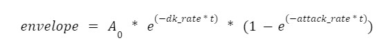

For our final project, we created Jambot. Born out of a love for jamming with friends and improvising over backing tracks, the Jambot listens to music played by the user to detect the key of the played track and then improvises with the user's song in that key. The Jambot system relies and runs on a Raspberry Pi Pico, a Software Development Kit for the RP2040 microcontroller. In addition to this key piece of hardware, other main components are Digital to Analog Converter (DAC) connected to speakers for sound synthesis, and an Analog to Digital Converter (ADC) connected to a microphone to analyze the user's song. On the software side, the output song is synthesized using an algorithm called FM synthesis. We were able to find an FM synthesis implementation already created by Bruce Land and utilized it. We played around with the parameters of the algorithm to output a tone similar to a piano, but more robotic sounding. We built off of this program by adding more notes and keys as well as a few random number generators to compute the next output note. The input song is analyzed using a Fast Fourier Transform(FFT) program also created by Bruce Land. We altered the program to be much more precise, which we found necessary for accurate key detection. On top of that, we implemented a key detection algorithm after frequencies from the input song were identified with the FFT. Ultimately, Jambot works and is a fun system to play around with. It still can sound a bit robotic or random, and it would be interesting to continue working on the project to see how human-like it could become.
One of us enjoys playing saxophone with her friends. Oftentimes the friends play chords on guitar and/or keyboard and sing the lyrics of a chosen song, while the saxophone player plays phrases of random notes that are in the key of the song. Something that she found interesting is that she often had no idea what she was about to play, but as long as she knew the key and could feel the general mood and tempo of the song, it usually sounded pretty good. That brought up questions about what is necessary for improvising over a song - could a program be just as good as our mediocre saxophone player if it followed those same guidelines? This idea is what the Jambot explores.
When the system starts, the user will be asked to input a tempo (speed of the song in beats per minute), and choose a setting for inputting weights. These weights affect the probability of which note will be played next. Each note in the scale has an array of 8 weights, each associated with the probability of the next possible notes. There are three weights settings: equal weights, jazzy weights, and custom weights. When the serial inputs are collected, the Jambot begins detecting the key of the input song. The user can see the progress along the way such as which frequencies have been detected. When 15 frequencies are detected, the Jambot begins cycling through key signatures. The user can see which keys the Jambot is checking, and which one it lands on. If after checking through three keys, none of the keys matched, then it starts the frequency detection process over again. As soon as a key is detected, the Jambot begins outputting a song. Based on the tempo, we have tried to output lengths of notes to match the mood of the song (i.e. slower songs are more likely to have whole notes or half notes while faster songs are more likely to have sixteenth notes.) The Jambot will continue outputting tones until the user resets the system.
There are four distinct phases of this program. These phases will be discussed in detail in the Software Design Section.
In terms of tradeoffs between hardware and software, we could improve upon the microphone part of the circuit. We use a fairly simple and cheap microphone from Adafruit. We noticed that in an empty room, the key detection worked with a much higher accuracy than it did in a room with other people who were talking or making other sounds. To account for the sometimes noisy conditions, we implemented a slow and accurate FFT function to detect frequencies and (hopefully) discard noise. If we had a more sophisticated and noise-canceling microphone system, we could have written a faster FFT function. Beyond this notable tradeoff, we cannot think of an any possible improvements or sacrifices made to the system.
We did not base this idea off of anything that is already on the market, and after coming up with the idea, we could not find any device that does exactly what Jambot does. That being said, there is definitely an AI music software out there such as SoundRaw, which allows you to design your own song based on input mood, genre, and the length of the song; and AIVA, which allows you to create theme music to match the background of whatever you are implementing. To the best of our knowledge, we are not intentionally breaking any patent laws.
As mentioned, Bruce Land's FM synthesis code was referenced in order to generate our system's instrumental like sounds. In general, FM synthesis can be utilized to produce many instrumental sounds like strings or drums; Land uses the following equation:
with exponential functions within each of the envelopes.1
Land then utilizes the first order differential equation Euler approximation, where at each time step the exponential functions are calculated. Some rearranging and simplifying, as K*dt < 1, results in the following:
Bruce Land also uses the following variables in his program: F_main, F_fm, attack_main, attack_fm, DK_main, DK_fm, depth_fm, sustain time. Modifying combinations of these variables can impact the resulting sound.1
The purpose of a fast fourier transform is to transfer a signal from one domain to some representation in the frequency domain. Bruce Land's FFT program was used. First, the FFT is initialized by creating a 2048 sized sinwave and window table. Then by using imaginary and real inputs, takes a forward fast fourier transform to decompose the input data and get the frequency bin amplitudes. A log2 approximation is then taken. Below is the basic Forward Fast Fourier Transform Equation.2
To have a true random generator we used Deemo Chen's random generator implementation. According to Chen, a ring oscillator - an odd series of NOT gates that creates an unstable system - results in unpredictability that matches a true random generator; additionally, since the RP2040 has a register where this output can be accessed, Chen's generator can input a number, n, and output a number between 0 and 2n.3 Below is his RNG implementation.
We approached the project in two parts: first generate sounds that sound musical, then implement key detection.
To generate sound, we used an FM synthesis program created by Professor Land.(1) FM synthesis is similar to Direct Digital Synthesis which we used in the Cricket Chirp Synthesis lab, but it produces more musical tones. Professor Land's program output and cycled through the seven notes in a C scale.
We built upon this program to fit our needs by adding two random number generators: one to select which frequency to play next (note_SM()) and another to select the time-length of that note (rand_note_length()). As stated in the background math/algorithms section, we used a random number generator created by Deemo Chen who is also in this class.3 Here is a code snippet from the FM Synthesis thread showing how the outputs from these RNGS decide the next note that will be played:
To play around with different keys, tempos, and weights, we added a serial input interface for these values. Professor Land's original code outputs the C scale at a tempo of about 80 beats per minute (BPM), and we were able to multiply the lengths of the FM Synthesis time parameters by a factor of the inputted tempo. There are 12 different major keys, and the only way to be able to "pick" between them is with a long if-else statement. Based on the input key signature, the if statement associated with that key would assign each of the elements in the frequency array with the appropriate frequencies in that key. Here is a snippet of two of those 12 cases.
At this point, the Jambot was outputting random songs with specified tempos, keys, and weights. We were ready to move on to key detection.
We thought about the Cricket Chirp Synthesis Lab, and how FFT was used to detect other cricket chirps at specific frequencies. We tried to use the working FFT code from the first lab and add it to our now working Jambot code, but it proved to be challenging. Professor Land's FM synthesis program already had FFT capabilities, but it calculated the FFT of the output frequency instead of any signals from a microphone. Professor Land's code did not use a microphone at all. Furthermore, the FFT algorithm already in the FM synthesis program used fix12 and fix14 data types, while we had been using fix15 all semester. We would run into dozens of data type and variable name errors several times and end up scrapping our progress and returning to where we had started before trying to combine code.
We spent about a week trying to figure out how to combine the code or alter the FFT functions that were already in the FM synthesis program, without much luck. Finally, we realized that Professor Land had another program which did use a microphone and computed FFT on the microphone data to detect frequencies, using the same data types that we had in our FM synthesis program.1 It even came with a VGA display that displayed the current heard frequency and its spectrum diagram. At this point, we had a lot of practice with trying to combine new FFT functions to replace the original ones in our FM synthesis program, so we were able to successfully integrate the programs almost immediately.
Now frequency detection worked, and we needed to come up with a way to use that data to determine a pattern, or a key signature. To approach this task, we thought about how people with perfect pitch might determine keys of songs.
We understand limited music theory, but we know that there is a pattern that in simpler songs, root notes, or the "name" of the key, are frequently played throughout the song. In Cornell's Alma Mater, the root note is the start note of 3 of the 4 phrases, and the last note of 2 of the 4 phrases.4 Other common notes in simple songs are thirds, fifths, and sevenths. We used this "common note" observation to implement our key detection function.
In the FFT function, we detect the highest peak bin. When the maximum magnitude frequency is the same frequency two times in a row, we add that frequency to an array. We wait for duplicate detections to limit noise being detected. When 15 elements have been stored in this array, we move to the Key Detection Function. This function will compare the collected frequencies to the frequencies in several guessed key signatures. First, each of the frequencies in the detected array are normalized to within a range of a specific octave for comparison purposes. We utilized the fact that all octave jumps are related by a factor of two i.e. C4 is twice the amount of Hertz as C3. Also, any frequencies lower than 60 Hz or higher than 4200 Hz are discarded. For reference, middle C is about 261 Hz.
With this normalized array, we find the mode. Then, we guess that the mode is the root note of the key and compare all of the elements in the array to that key. If it is not a match, we move onto the fifth. If that is not a match, then we try the seventh. For example, if C is the mode then we first try the key of C, then the key of F, then the key of Db. When a match is detected, the program immediately enters the song output that we implemented before. If a match is not detected from any of these three tries, then the program goes back to the FFT function and starts the detected notes array filling process over again.
While testing this comparison method, we realized that frequencies from the FFT function to be as accurate as possible. Initially, the code used 512 bins, and there were a few frequencies which were in between two different notes. To make the frequency divisions more precise, we increased the number of bins to 2048. This slowed down the process quite a bit, which was visually observed by how much the VGA display was suddenly lagging. However, to the user, the process does not take very long so this justified the longer computation time.
Since the physical needs of this project were identical to those of the Cricket Chirp Synthesis lab (Lab 1), we used the same circuit design.5 It is a simple circuit and could easily and cheaply be rebuilt.
Over the course of four weeks, with discussion with staff, we were able to adjust and achieve our goals. Our conceptual system was composed of many components that we had to implement. With the FM synthesis and FFT programs already implemented, we created a method for key detection. We also implemented random generators for which note of the heard key would be played and for what duration. To create different rhythms and create better matching ones, probability weights for note and duration were created and allowed to be inputted by the user. In addition, this latter feature would take into account the beats per measure. Additionally, an input for tempo was created, and was used as an indicator for whether longer or shorter notes would be favored at faster or higher tempoed songs, respectively.
With each implementation, the system was tested through a variety of ways. For example, since we wanted our Jambot to sound like a musical instrument, parameters of the FM synthesis program were modified and tested through audio output. A problem that surfaced was that the notes sounded choppy and did not seem to be "played" the entire duration, with pauses between notes. Removing a yield function within the protothread_fm fixed this problem, as there was a noticeable auditory difference. When initially working with Bruce Land's code and troubleshooting, we heavily relied on the serial interface as well as the VGA frequency spectrum display. Features such as the probability inputs, random generator output, and additional notes played for a certain duration to a list were tested with print statements and the serial interface as well. Each note held for a certain duration (that also was added to a list) were printed to the serial interface. The detected key or failure of key detection were added as messages to the serial interface as well.
While there was testing for features of the program as it was built, there was also separate testing for the completed system as a whole. To test the system, we played a variety of songs of known key, tempo (beats per measure), and genre. When first testing the system we noticed two things: one, our system didn't always rhythmically match the song, and two, our system took a much longer time to detect the key of faster tempo songs. We were able to notice this by listening to audio output, as well as watching what frequencies were held for a certain time and added to the list. Initially, for a note to be considered held for a duration of time, three beats of the same frequency had to be detected; this was changed to two beats to reduce the time needed for a key to be detected for faster songs. Even though we were able to achieve all of the aforementioned features, we wanted the JamBot to sound rhythmic or harmonious as it played along with a chosen song. To do this, we designed a few versions of the probability weights. By "version," each key had weights that were changed to sound differently. For example, by referencing sheet music, jazz-like weights were created. The other versions were an "equal" weights implementation, where probabilities were the same across all keys, and a version that could be inputted by the user. To correct for faster tempo songs, a correlation program between tempo and note duration was created.
With these modifications, there was a noticeable effect on the system. For example, although there was still a slight pause between FM synthesis notes, it was not very noticeable and the JamBot output sounded like an actual instrument. The change from detecting three beats of the same frequency to two beats also sped up the time it took for a key to be detected. We found that most songs took from 10 seconds to 1 minute for the key to be detected; longer durations were noticed for songs with more accidentals or notes that are half steps above or below a note of the key. Detection of the frequencies held for a number of beats were detected and printed to the serial interface immediately. Once the list reached the required minimum number of detected notes, the system took about less than a second to start playing notes of a certain key or, in case of key detection failure, relistening for more notes. Accuracy of notes detected was ensured by using the VGA frequency display from Bruce Land's code, and for notes played, frequencies were hardcoded from online sources. The tempo, note duration, and correlation between these features was tested by using a metronome and manually adjusting the calculated tempo variable in the code.
The JamBot system relies mostly on software implementations. Any hardware additions were insulated or properly physically isolated from one another on the circuit. The circuit itself relied on voltage from lab computers to the Raspberry Pi pico. Filtering also occurred through software functions. Therefore, the system is safe to use by most users. For ease of use, the serial interface was a key component. One key feature was a menu of default probability weights that a user could choose from- "jazzy weights," "equal weights," or "create new weights." Other messages were prompted to the user to input values such as for tempo. By having a series of messages and values that could be entered with the lab computer keyboard, adjustable parameters could easily be changed. For a song to be detected, the user would only need to choose a song on their phone and have the phone positioned near the microphone of the circuit. To reset the system and play a new song, the buttons of the USB extension of the lab computer would need to be powered off and back on. As such, the system does not have many components that the user has to change, and if the components did change, the user could easily adjust them.
When we first envisioned and suggested our project, our idea was to have the pico reproduce a jazz solo. Given a key and tempo through serial communication, using a microphone and FFT, the Pico would be able to determine which pitches are being played and which key those pitches have in common. We also planned to start the solo production with two random number generators: one that assigns the next note to play and another to determine how long to play that note. To make the solos sound less random, we could write a Machine Learning program (Markov model) with classic jazz solos on another computer. The Pico could then learn which "steps" (relationships between successive notes) sound better.
Though our final system wasn't necessarily the exact same as what we initially thought, we were still able to produce a successful system that met and exceeded our expectations. In the end, we created a system that took in a musical input, then using FFT, the system was able to detect the key the input was in and output a succession of random notes that had the same tempo as our input song. There were ideas from our original design that remained in our final design, we still input our tempo, we still had our Pico determine the key based on the pitches that were heard, and we still had notes be randomly played in succession. There were also ideas that were changed and removed that either elevated or simplified our design. For example, instead of the notes in succession played being fully random, each pitch within the key was given weights, where each weight determined the likelihood of the note playing. Thus we were able to manipulate the weights ourselves to hear what sounded best with a song. This feature also replaced the need for the machine learning algorithm we initially proposed. Additionally, instead of the length of each note being at random, the note length was dependent on the song. Our system would replicate the note length of the song. If the song were playing a half note, the system would play a half note and that was consistent for all notes.
In order to implement our system, the basis of our code was developed using code from Bruce Land's ECE4760 website. We drew our inspiration from Bruce's use of FM sound synthesis in order to reproduce the piano sound, as well as his building of the FFT in order to obtain data acquired by the Pico. Other than Bruce's code which is on a public domain, the rest was built by us. So it'll likely be able to be patented.
There's a lot we could expand upon with this project. For example, we could try again to make sounds smoother with a Markov model using machine learning. An issue that we ran into during the lab was that for songs that had accidentals or a faster tempo, the system took longer to pick up the correct key. Perhaps implementing the machine learning program would further improve upon those issues in the future. Another place where we could improve is our system works great with instrumentals, but not the best with songs with lyrics. So we could also change our system by refining it to accommodate songs with lyrics. Given that the microphone is pretty sensitive, maybe we could change it to one that is less influenced by outside noise. Lastly, we decided that our system would output piano keys rather than guitar keys since piano was both more jazz-like, and was already implemented in Bruce's code. To further expand on that, we could have our system detect what instrument is playing and play back the song with the same instrument.
The group approves this report for inclusion on the course website.
The group approves the video for inclusion on the course youtube channel.
1. Land, B. (2011, September 11). ECE4760 PIC32 sound. Electrical and Computer Engineering | Electrical and Computer Engineering; ECE 4760 - Bruce Land. https://people.ece.cornell.edu/land/courses/ece4760/PIC32/index_sound_synth.html
2. Fourier Transform - Definition, Formula, Properties, Applications and Examples. (2022, June 22). BYJUS; BYJU'S. https://byjus.com/maths/fourier-transform/
3. Chen, D. (2022, October 2). RP2040 Randomness and Ring Oscillator - DeemOcean. DeemOcean; Deemo Yizhou Chen Observatory. https://deemocean.com/2022/10/02/rp2040-randomness-and-ring-oscillator/
4. Alma Mater - Sidney Cox Library of Music and Dance. (n.d.). Sidney Cox Library of Music and Dance. Retrieved December 13, 2022, from https://music.library.cornell.edu/alma-mater/
5. Adams, H. (n.d.-b). Crickets. Index; ECE 4760 - Van Hunter Adams. Retrieved December 13, 2022, from https://vanhunteradams.com/Pico/Cricket/Crickets.html
We all put in equal work in terms of debugging and thinking of how to implement the program. Wanda helped with the music theory side of things, Kaitlyn wrote and turned in all of the weekly checkpoints, and Nia tested the hardware and the checkpoints along the way.
1
2
3
4
5
6
7
8
9
10
11
12
13
14
15
16
17
18
19
20
21
22
23
24
25
26
27
28
29
30
31
32
33
34
35
36
37
38
39
40
41
42
43
44
45
46
47
48
49
50
51
52
53
54
55
56
57
58
59
60
61
62
63
64
65
66
67
68
69
70
71
72
73
74
75
76
77
78
79
80
81
82
83
84
85
86
87
88
89
90
91
92
93
94
95
96
97
98
99
100
101
102
103
104
105
106
107
108
109
110
111
112
113
114
115
116
117
118
119
120
121
122
123
124
125
126
127
128
129
130
131
132
133
134
135
136
137
138
139
140
141
142
143
144
145
146
147
148
149
150
151
152
153
154
155
156
157
158
159
160
161
162
163
164
165
166
167
168
169
170
171
172
173
174
175
176
177
178
179
180
181
182
183
184
185
186
187
188
189
190
191
192
193
194
195
196
197
198
199
200
201
202
203
204
205
206
207
208
209
210
211
212
213
214
215
216
217
218
219
220
221
222
223
224
225
226
227
228
229
230
231
232
233
234
235
236
237
238
239
240
241
242
243
244
245
246
247
248
249
250
251
252
253
254
255
256
257
258
259
260
261
262
263
264
265
266
267
268
269
270
271
272
273
274
275
276
277
278
279
280
281
282
283
284
285
286
287
288
289
290
291
292
293
294
295
296
297
298
299
300
301
302
303
304
305
306
307
308
309
310
311
312
313
314
315
316
317
318
319
320
321
322
323
324
325
326
327
328
329
330
331
332
333
334
335
336
337
338
339
340
341
342
343
344
345
346
347
348
349
350
351
352
353
354
355
356
357
358
359
360
361
362
363
364
365
366
367
368
369
370
371
372
373
374
375
376
377
378
379
380
381
382
383
384
385
386
387
388
389
390
391
392
393
394
395
396
397
398
399
400
401
402
403
404
405
406
407
408
409
410
411
412
413
414
415
416
417
418
419
420
421
422
423
424
425
426
427
428
429
430
431
432
433
434
435
436
437
438
439
440
441
442
443
444
445
446
447
448
449
450
451
452
453
454
455
456
457
458
459
460
461
462
463
464
465
466
467
468
469
470
471
472
473
474
475
476
477
478
479
480
481
482
483
484
485
486
487
488
489
490
491
492
493
494
495
496
497
498
499
500
501
502
503
504
505
506
507
508
509
510
511
512
513
514
515
516
517
518
519
520
521
522
523
524
525
526
527
528
529
530
531
532
533
534
535
536
537
538
539
540
541
542
543
544
545
546
547
548
549
550
551
552
553
554
555
556
557
558
559
560
561
562
563
564
565
566
567
568
569
570
571
572
573
574
575
576
577
578
579
580
581
582
583
584
585
586
587
588
589
590
591
592
593
594
595
596
597
598
599
600
601
602
603
604
605
606
607
608
609
610
611
612
613
614
615
616
617
618
619
620
621
622
623
624
625
626
627
628
629
630
631
632
633
634
635
636
637
638
639
640
641
642
643
644
645
646
647
648
649
650
651
652
653
654
655
656
657
658
659
660
661
662
663
664
665
666
667
668
669
670
671
672
673
674
675
676
677
678
679
680
681
682
683
684
685
686
687
688
689
690
691
692
693
694
695
696
697
698
699
700
701
702
703
704
705
706
707
708
709
710
711
712
713
714
715
716
717
718
719
720
721
722
723
724
725
726
727
728
729
730
731
732
733
734
735
736
737
738
739
740
741
742
743
744
745
746
747
748
749
750
751
752
753
754
755
756
757
758
759
760
761
762
763
764
765
766
767
768
769
770
771
772
773
774
775
776
777
778
779
780
781
782
783
784
785
786
787
788
789
790
791
792
793
794
795
796
797
798
799
800
801
802
803
804
805
806
807
808
809
810
811
812
813
814
815
816
817
818
819
820
821
822
823
824
825
826
827
828
829
830
831
832
833
834
835
836
837
838
839
840
841
842
843
844
845
846
847
848
849
850
851
852
853
854
855
856
857
858
859
860
861
862
863
864
865
866
867
868
869
870
871
872
873
874
875
876
877
878
879
880
881
882
883
884
885
886
887
888
889
890
891
892
893
894
895
896
897
898
899
900
901
902
903
904
905
906
907
908
909
910
911
912
913
914
915
916
917
918
919
920
921
922
923
924
925
926
927
928
929
930
931
932
933
934
935
936
937
938
939
940
941
942
943
944
945
946
947
948
949
950
951
952
953
954
955
956
957
958
959
960
961
962
963
964
965
966
967
968
969
970
971
972
973
974
975
976
977
978
979
980
981
982
983
984
985
986
987
988
989
990
991
992
993
994
995
996
997
998
999
1000
1001
1002
1003
1004
1005
1006
1007
1008
1009
1010
1011
1012
1013
1014
1015
1016
1017
1018
1019
1020
1021
1022
1023
1024
1025
1026
1027
1028
1029
1030
1031
1032
1033
1034
1035
1036
1037
1038
1039
1040
1041
1042
1043
1044
1045
1046
1047
1048
1049
1050
1051
1052
1053
1054
1055
1056
1057
1058
1059
1060
1061
1062
1063
1064
1065
1066
1067
1068
1069
1070
1071
1072
1073
1074
1075
1076
1077
1078
1079
1080
1081
1082
1083
1084
1085
1086
1087
1088
1089
1090
1091
1092
1093
1094
1095
1096
1097
1098
1099
1100
1101
1102
1103
1104
1105
1106
1107
1108
1109
1110
1111
1112
1113
1114
1115
1116
1117
1118
1119
1120
1121
1122
1123
1124
1125
1126
1127
1128
1129
1130
1131
1132
1133
1134
1135
1136
1137
1138
1139
1140
1141
1142
1143
1144
1145
1146
1147
1148
1149
1150
1151
1152
1153
1154
1155
1156
1157
1158
1159
1160
1161
1162
1163
1164
1165
1166
1167
1168
1169
1170
1171
1172
1173
1174
1175
1176
1177
1178
1179
1180
1181
1182
1183
1184
1185
1186
1187
1188
1189
1190
1191
1192
1193
1194
1195
1196
1197
1198
1199
1200
1201
1202
1203
1204
1205
1206
1207
1208
1209
1210
1211
1212
1213
1214
1215
1216
1217
1218
1219
1220
1221
1222
1223
1224
1225
1226
1227
1228
1229
1230
1231
1232
1233
1234
1235
1236
1237
1238
1239
1240
1241
1242
1243
1244
1245
1246
1247
1248
1249
1250
1251
1252
1253
1254
1255
1256
1257
1258
1259
1260
1261
1262
1263
1264
1265
1266
1267
1268
1269
1270
1271
1272
1273
1274
1275
1276
1277
1278
1279
1280
1281
1282
1283
1284
1285
1286
1287
1288
1289
1290
1291
1292
1293
1294
1295
1296
1297
1298
1299
1300
1301
1302
1303
1304
1305
1306
1307
1308
1309
1310
1311
1312
1313
1314
1315
1316
1317
1318
1319
1320
1321
1322
1323
1324
1325
1326
1327
1328
1329
1330
1331
1332
1333
1334
1335
1336
1337
1338
1339
1340
1341
1342
1343
1344
1345
1346
1347
1348
1349
1350
1351
1352
1353
1354
1355
1356
1357
1358
1359
1360
1361
1362
1363
1364
1365
1366
1367
1368
1369
1370
1371
1372
1373
1374
1375
1376
1377
1378
1379
1380
1381
1382
1383
1384
1385
1386
1387
1388
1389
1390
1391
1392
1393
1394
1395
1396
1397
1398
1399
1400
1401
1402
1403
1404
1405
1406
1407
1408
1409
1410
1411
1412
1413
1414
1415
1416
1417
1418
1419
1420
1421
1422
1423
1424
1425
1426
1427
1428
1429
1430
1431
1432
1433
1434
1435
1436
1437
1438
1439
1440
1441
1442
1443
1444
1445
1446
1447
1448
1449
1450
1451
1452
1453
1454
1455
1456
1457
1458
1459
1460
1461
1462
1463
1464
1465
1466
1467
1468
1469
1470
1471
1472
1473
1474
1475
1476
1477
1478
1479
1480
1481
1482
1483
1484
1485
1486
1487
1488
1489
1490
1491
1492
1493
1494
1495
1496
1497
1498
1499
1500
1501
1502
1503
1504
1505
1506
1507
1508
1509
1510
1511
1512
1513
1514
1515
1516
1517
1518
1519
1520
1521
1522
1523
1524
1525
1526
1527
1528
1529
1530
1531
1532
1533
1534
1535
1536
1537
1538
1539
1540
1541
1542
1543
1544
1545
1546
1547
1548
1549
1550
1551
1552
1553
1554
1555
1556
1557
1558
1559
1560
1561
1562
1563
1564
1565
1566
1567
1568
1569
1570
1571
1572
1573
1574
1575
1576
1577
1578
1579
1580
1581
1582
1583
1584
1585
1586
1587
1588
1589
1590
1591
1592
1593
1594
1595
1596
1597
1598
1599
1600
1601
1602
1603
1604
1605
1606
1607
1608
1609
1610
1611
1612
1613
1614
1615
1616
1617
1618
1619
1620
1621
1622
1623
1624
1625
1626
1627
1628
1629
1630
1631
1632
1633
1634
1635
1636
1637
1638
1639
1640
1641
1642
1643
1644
1645
1646
1647
1648
1649
1650
1651
1652
1653
1654
1655
1656
1657
1658
1659
1660
1661
1662
1663
1664
1665
1666
1667
1668
1669
1670
1671
1672
1673
1674
1675
1676
1677
1678
1679
1680
1681
1682
1683
1684
1685
1686
1687
1688
1689
1690
1691
1692
1693
1694
1695
1696
1697
1698
1699
1700
1701
1702
1703
1704
1705
1706
1707
1708
1709
1710
1711
1712
1713
1714
1715
1716
1717
1718
1719
1720
1721
1722
1723
1724
1725
1726
1727
1728
1729
1730
1731
1732
1733
1734
1735
1736
1737
1738
1739
1740
1741
1742
1743
1744
1745
1746
1747
1748
1749
1750
1751
1752
1753
1754
1755
1756
1757
1758
1759
1760
1761
1762
1763
1764
1765
1766
1767
1768
1769
1770
1771
1772
1773
1774
1775
1776
1777
1778
1779
1780
1781
1782
1783
1784
1785
1786
1787
1788
1789
1790
1791
1792
1793
1794
1795
1796
1797
1798
1799
1800
1801
1802
1803
1804
1805
1806
1807
1808
1809
1810
1811
1812
1813
1814
1815
1816
1817
1818
1819
1820
1821
1822
1823
1824
1825
1826
1827
1828
1829
1830
1831
1832
1833
1834
1835
1836
1837
1838
1839
1840
1841
1842
1843
1844
1845
1846
1847
1848
1849
1850
1851
1852
1853
1854
1855
1856
1857
1858
1859
1860
1861
1862
1863
1864
1865
1866
1867
1868
1869
1870
1871
1872
1873
1874
1875
1876
1877
1878
1879
1880
1881
1882
1883
1884
1885
1886
1887
1888
1889
1890
1891
1892
1893
1894
1895
1896
1897
1898
1899
1900
1901
1902
1903
1904
1905
1906
1907
1908
1909
1910
1911
1912
1913
1914
1915
1916
1917
1918
1919
1920
1921
1922
1923
1924
1925
1926
1927
1928
1929
1930
1931
1932
1933
1934
1935
1936
1937
1938
1939
1940
1941
1942
1943
1944
1945
1946
1947
1948
1949
1950
1951
1952
1953
1954
1955
1956
1957
1958
1959
1960
1961
1962
1963
1964
1965
1966
1967
1968
1969
1970
1971
1972
1973
1974
1975
1976
1977
1978
1979
1980
1981
1982
1983
1984
1985
1986
1987
1988
1989
1990
1991
1992
1993
1994
1995
1996
1997
1998
1999
2000
2001
2002
2003
2004
2005
2006
2007
2008
2009
2010
2011
2012
2013
2014
2015
2016
2017
2018
2019
2020
2021
2022
2023
2024
2025
2026
2027
2028
2029
2030
2031
2032
2033
2034
2035
2036
2037
2038
2039
2040
2041
2042
2043
2044
2045
2046
2047
2048
2049
2050
2051
2052
2053
2054
2055
2056
2057
2058
2059
2060
2061
2062
2063
2064
2065
2066
2067
2068
2069
2070
2071
2072
2073
2074
2075
2076
2077
2078
2079
2080
2081
2082
2083
2084
2085
2086
2087
2088
2089
2090
2091
2092
2093
2094
2095
2096
2097
2098
2099
2100
2101
2102
2103
2104
2105
2106
2107
2108
2109
2110
2111
2112
2113
2114
2115
2116
2117
2118
2119
2120
2121
2122
2123
2124
2125
2126
2127
2128
2129
2130
2131
2132
2133
2134
2135
2136
2137
2138
2139
2140
2141
2142
2143
2144
2145
2146
2147
2148
2149
2150
2151
2152
2153
2154
2155
2156
2157
2158
2159
2160
2161
2162
2163
2164
2165
2166
2167
2168
2169
2170
2171
2172
2173
2174
2175
2176
2177
2178
2179
2180
2181
2182
2183
2184
2185
2186
2187
2188
2189
2190
2191
2192
2193
2194
2195
2196
2197
2198
2199
2200
2201
2202
2203
2204
2205
2206
2207
2208
2209
2210
2211
2212
2213
2214
2215
2216
2217
2218
2219
2220
2221
2222
2223
2224
|
/**
* Credit to Hunter Adams (vha3@cornell.edu), Bruce Land (bruce.land@cornell.edu), and Deemo Chen
* (https://deemocean.com/2022/10/02/rp2040-randomness-and-ring-oscillator/)
*
* HARDWARE CONNECTIONS
* - GPIO 16 ---> VGA Hsync
* - GPIO 17 ---> VGA Vsync
* - GPIO 18 ---> 330 ohm resistor ---> VGA Green lo-bit |__ both wired to 150 ohm to ground
* - GPIO 19 ---> 220 ohm resistor ---> VGA Green hi_bit | and to VGA Green
* - GPIO 20 ---> 330 ohm resistor ---> VGA Blue
* - GPIO 21 ---> 330 ohm resistor ---> VGA Red
* - RP2040 GND ---> VGA GND
*
* RESOURCES USED
* - PIO state machines 0, 1, and 2 on PIO instance 0
* - DMA channels 0, 1, 2, and 3
* - 153.6 kBytes of RAM (for pixel color data)
*
* Protothreads v1.1.1
* Serial console on GPIO 0 and 1 for debugging
*
*
* DAC :
* GPIO 5 (pin 7) Chip select
GPIO 6 (pin 9) SCK/spi0_sclk
GPIO 7 (pin 10) MOSI/spi0_tx
3.3v (pin 36) -> VCC on DAC
GND (pin 3) -> GND on DAC
*
*/
// ==========================================
// === VGA graphics library
// ==========================================
#include "vga16_graphics.h"
#include <stdio.h>
#include <stdlib.h>
#include <math.h>
#include <string.h>
#include "pico/stdlib.h"
#include "hardware/pio.h"
#include "hardware/dma.h"
#include "hardware/adc.h"
#include "hardware/pwm.h"
#include "hardware/irq.h"
#include "hardware/spi.h"
// // Our assembled programs:
// // Each gets the name <pio_filename.pio.h>
// #include "hsync.pio.h"
// #include "vsync.pio.h"
// #include "rgb.pio.h"
// ==========================================
// === hardware and protothreads globals
// ==========================================
#include "hardware/sync.h"
#include "hardware/timer.h"
#include "pico/multicore.h"
#include "string.h"
#include <time.h>
// protothreads header
#include "pt_cornell_rp2040_v1_1_1.h"
// globals for the graphincs
short adc_x, adc_y;
short draw_x, draw_y, last_draw_x, last_draw_y, last_click_x, last_click_y, x_latch;
short click, double_click, button, last_button, click_latch;
short first_click = 1;
int click_time, last_click_time;
int clicked_item;
float serial_value;
char serial_value_input[32];
volatile int rando = 0;
volatile float rand_len = 0;
//these aren't named very well lol
bool sm_EN = 0; //enable mic stuff
bool kd_EN = 0; //key detection done (also necessary for audo state machine)
bool mic_EN = 1; //when key detection is done, stop detecting
// data semaphore to control fft on core 1
struct pt_sem run_fft_s, finish_fft_s ;
// protection for printing
spin_lock_t * lock_stdout ;
// unprotected global to halt display
static int run_stop = 1 ;
// ==========================================
// Some globals for storing timer information
// ==========================================
volatile unsigned int time_accum = 0;
unsigned int time_accum_old = 0 ;
char timetext[40];
//from Deemo Chen RNG
#define ROSC_RANDOMBIT_OFFSET _u(0x0000001c)
#define ROSC_BASE _u(0x40060000)
// Timer interrupt
bool repeating_timer_callback(struct repeating_timer *t) {
time_accum += 1 ;
return true;
}
// ===========================================
// ADC setup + DMA channel for ADC
// ===========================================
// setup ADC
#define adc_array_length 2048
// raw from ADC
short adc_data[adc_array_length] ;
// formatted for scope trace
short display_data[adc_array_length] ;
short fft_display_data[adc_array_length] ;
short log_display_data[adc_array_length] ;
// copy of data
short analysis_data[adc_array_length] ;
// copy of data
short fft_data[adc_array_length] ;
int ADC_setup(void){
adc_init();
adc_gpio_init(26);
// p26 is ADC input 0
adc_select_input(0);
// 48 MHz clock / 12.8 KHz sample rate
//adc_set_clkdiv (3750);
// 16 KHz 32 mSec window
adc_set_clkdiv (3000);
// free run
adc_run(1);
// result is in adc_hw->result
// but we are going to forward that to the FIFO
//adc_fifo_setup(bool en, bool dreq_en, uint16_t dreq_thresh, bool err_in_fifo, bool byte_shift)
// fifo_enable, dreq_enable, thresh=1, no error, dont shift to 8-bits(for 8-bit PWM)
adc_fifo_setup(1,1,1,0,0);
//
// the DMA channel
int ADC_data_chan = 11 ; //
// Conflict with video gen code:
//int ADC_data_chan = dma_claim_unused_channel(true);
// The acdtual data channel
dma_channel_config c2 = dma_channel_get_default_config(ADC_data_chan);
channel_config_set_transfer_data_size(&c2, DMA_SIZE_16);
channel_config_set_read_increment(&c2, false);
channel_config_set_write_increment(&c2, true);
channel_config_set_irq_quiet(&c2, true);
channel_config_set_enable(&c2, true);
//channel_config_set_chain_to(&c2, ctrl_chan) ;
channel_config_set_dreq(&c2, DREQ_ADC);
//
dma_channel_configure(ADC_data_chan, &c2,
adc_data, // write_addr, to array
&adc_hw->fifo, // read_addr, the table
adc_array_length, // one ADC value,
1) ; // trigger
return ADC_data_chan ;
}
// ===========================================
// Cursor
// ===========================================
short cursor_pixel_x[5], cursor_pixel_y[5];
// Erase cursor
// replace cursor color with saved image colors
void erase_cursor(short x, short y)
{
// first the x direction, then y
for (int i = 0; i < 5; i++)
{
drawPixel(x - 2 + i, y, cursor_pixel_x[i]);
drawPixel(x, y - 2 + i, cursor_pixel_y[i]);
}
}
// Draw cursor
// replace image with cursor color and save image pixels
void draw_cursor(short x, short y)
{
for (int i = 0; i < 5; i++)
{
cursor_pixel_x[i] = readPixel(x - 2 + i, y);
cursor_pixel_y[i] = readPixel(x, y - 2 + i);
drawPixel(x - 2 + i, y, WHITE);
drawPixel(x, y - 2 + i, WHITE);
}
}
// ==================================================
// === set up a menu scheme for use with VGA
// ==================================================
// There is one list of up to 16 items drawn down the left side of the screen
// ALL items store and update using float values
// int values are copied from the float
struct menu_item
{
// displayed string
char item_name[15];
// displayed color
int item_color;
//1=float 0=int ;
int item_data_type;
// 1=log 0=linear
int item_inc_type;
// increment delta if linear, ratio if log
float item_increment;
// the current value, min, max
// al updates are performed on float, then copied to int
int item_int_value;
float item_float_value;
float item_float_min;
float item_float_max;
};
//variables input by user
// probability variables
float probs0[8], probs1[8], probs2[8], probs3[8], probs4[8], probs5[8], probs6[8], probs7[8];
int tempo;
char key[2];
volatile int curr_index, next_index = 7;
// ======
// build the menu array of items
struct menu_item menu[16];
// Actually use 11 in this example
#define menu_length 11
//
void draw_item(short menu_x, short menu_y, int item_index, int menu_num_items)
{
if (item_index < menu_num_items)
{
// display the name
setTextColor(menu[item_index].item_color);
setCursor(menu_x, menu_y + item_index * 25);
setTextSize(1);
writeString(menu[item_index].item_name);
// display the value
setTextColor(WHITE);
fillRect(menu_x, menu_y + item_index * 25 + 10, 90, 11, BLACK);
setCursor(menu_x, menu_y + item_index * 25 + 11);
char value_str[15];
// copy float to int value
menu[item_index].item_int_value = (int)menu[item_index].item_float_value;
// get the data type in bit 0
if (menu[item_index].item_data_type == 0)
sprintf(value_str, "%d", menu[item_index].item_int_value);
if (menu[item_index].item_data_type == 1)
sprintf(value_str, "%8.3f", menu[item_index].item_float_value);
writeString(value_str);
}
}
// =====
void draw_menu(short menu_x, short menu_y, int menu_num_items)
{
for (int i = 0; i < menu_num_items; i++)
{
draw_item(menu_x, menu_y, i, menu_num_items);
}
}
// ===== change value with serial
// direction is 1 for increase, -1 for decrease
void change_value_serial(int index, float value)
{
menu[index].item_float_value = value;
// check min/max
if (menu[index].item_float_value > menu[index].item_float_max)
menu[index].item_float_value = menu[index].item_float_max;
if (menu[index].item_float_value < menu[index].item_float_min)
menu[index].item_float_value = menu[index].item_float_min;
// update integer to match
menu[index].item_int_value = (int)menu[index].item_float_value;
}
//Deemo Chen RNG
// return random number by ROSC between 0-9
// N should be in [0,32]
float rand_note_length(float max_length)
{
static volatile uint32_t *randbit_reg = (uint32_t *)(ROSC_BASE + ROSC_RANDOMBIT_OFFSET);
unsigned int random = 0;
for (int i = 0; i < 10; i++)
{
unsigned int random_bit = 0x1 & (*randbit_reg);
random = random << 1 | random_bit;
}
int len = random % 10;
// printf("len: %d max_length: %f \n", len, max_length);
//favor longer notes for slow songs
if(tempo < 100) {
if(len == 2 && max_length == 4.0) // whole note
return 4.0;
else if(len <= 4 && max_length >= 2.0) //half note
return 2.0;
else if(len <= 6 && max_length >= 1.0) //quarter note
return 1.0;
else if(len <= 7 && max_length >= 0.5) // eighth note
return 0.50;
else if(len <= 8 && max_length >= 0.25) // sixteenth note
return 0.25;
else return 0.125; // really fast notes sound cool!'
}
// favor mid length notes for medium paces
else if(tempo < 140) {
if(len == 1 && max_length == 4.0) // whole note
return 4.0;
else if(len <= 4 && max_length >= 2.0) //half note
return 2.0;
else if(len <= 6 && max_length >= 1.0) //quarter note
return 1.0;
else if(len <= 7 && max_length >= 0.5) // eighth note
return 0.50;
else if(len <= 8 && max_length >= 0.25) // sixteenth note
return 0.25;
else return 0.125; // really fast notes sound cool!'
}
// short note for fast songs
else if (tempo < 180) {
if (len <= 1 && max_length >= 2.0) //half note
return 2.0;
else if(len <= 3 && max_length >= 1.0) //quarter note
return 1.0;
else if(len <= 5 && max_length >= 0.5) // eighth note
return 0.50;
else if(len <= 7 && max_length >= 0.25) // sixteenth note
return 0.25;
else return 0.125; // really fast notes sound cool!'
}
else {
if (len <= 1 && max_length >= 2.0) //half note
return 2.0;
else if(len <= 2 && max_length >= 1.0) //quarter note
return 1.0;
else if(len <= 4 && max_length >= 0.5) // eighth note
return 0.50;
else if(len <= 7 && max_length >= 0.25) // sixteenth note
return 0.25;
else return 0.125; // really fast notes sound cool!'
}
}
//Deemo Chen RNG
// return random number by ROSC between 0-9
// N should be in [0,32]
int ROrand(int N)
{
static volatile uint32_t *randbit_reg = (uint32_t *)(ROSC_BASE + ROSC_RANDOMBIT_OFFSET);
unsigned int random = 0;
for (int i = 0; i < N; i++)
{
unsigned int random_bit = 0x1 & (*randbit_reg);
random = random << 1 | random_bit;
}
return random % 10;
}
int note_SM() {
int r = ROrand(10);
rando = r;
// printf("rando: %d\n curr_ind: %d\n", rando, curr_index);
int note = 0;
switch(curr_index) {
case 0:
if(r <= probs0[0] - 1) next_index = 0;
else if(r <= probs0[1] - 1) next_index = 1;
else if(r <= probs0[2] - 1) next_index = 2;
else if(r <= probs0[3] - 1) next_index = 3;
else if(r <= probs0[4] - 1) next_index = 4;
else if(r <= probs0[5] - 1) next_index = 5;
else if(r <= probs0[6] - 1) next_index = 6;
else next_index = 7;
break;
case 1:
if(r <= probs1[0] - 1) next_index = 1;
else if(r <= probs1[1] - 1) next_index = 2;
else if(r <= probs1[2] - 1) next_index = 3;
else if(r <= probs1[3] - 1) next_index = 4;
else if(r <= probs1[4] - 1) next_index = 5;
else if(r <= probs1[5] - 1) next_index = 6;
else if(r <= probs1[6] - 1) next_index = 7;
else next_index = 0;
break;
case 2:
if(r <= probs2[0] - 1) next_index = 2;
else if(r <= probs2[1] - 1) next_index = 3;
else if(r <= probs2[2] - 1) next_index = 4;
else if(r <= probs2[3] - 1) next_index = 5;
else if(r <= probs2[4] - 1) next_index = 6;
else if(r <= probs2[5] - 1) next_index = 7;
else if(r <= probs2[6] - 1) next_index = 0;
else next_index = 1;
break;
case 3:
if(r <= probs3[0] - 1) next_index = 3;
else if(r <= probs3[1] - 1) next_index = 4;
else if(r <= probs3[2] - 1) next_index = 5;
else if(r <= probs3[3] - 1) next_index = 6;
else if(r <= probs3[4] - 1) next_index = 7;
else if(r <= probs3[5] - 1) next_index = 0;
else if(r <= probs3[6] - 1) next_index = 1;
else next_index = 2;
break;
case 4:
if(r <= probs4[0] - 1) next_index = 4;
else if(r <= probs4[1] - 1) next_index = 5;
else if(r <= probs4[2] - 1) next_index = 6;
else if(r <= probs4[3] - 1) next_index = 7;
else if(r <= probs4[4] - 1) next_index = 0;
else if(r <= probs4[5] - 1) next_index = 1;
else if(r <= probs4[6] - 1) next_index = 2;
else next_index = 3;
break;
case 5:
if(r <= probs5[0] - 1) next_index = 5;
else if(r <= probs5[1] - 1) next_index = 6;
else if(r <= probs5[2] - 1) next_index = 7;
else if(r <= probs5[3] - 1) next_index = 0;
else if(r <= probs5[4] - 1) next_index = 1;
else if(r <= probs5[5] - 1) next_index = 2;
else if(r <= probs5[6] - 1) next_index = 3;
else next_index = 4;
break;
case 6:
if(r <= probs6[0] - 1) next_index = 6;
else if(r <= probs6[1] - 1) next_index = 7;
else if(r <= probs6[2] - 1) next_index = 0;
else if(r <= probs6[3] - 1) next_index = 1;
else if(r <= probs6[4] - 1) next_index = 2;
else if(r <= probs6[5] - 1) next_index = 3;
else if(r <= probs6[6] - 1) next_index = 4;
else next_index = 5;
break;
case 7:
if(r <= probs7[0] - 1) next_index = 7;
else if(r <= probs7[1] - 1) next_index = 0;
else if(r <= probs7[2] - 1) next_index = 1;
else if(r <= probs7[3] - 1) next_index = 2;
else if(r <= probs7[4] - 1) next_index = 3;
else if(r <= probs7[5] - 1) next_index = 4;
else if(r <= probs7[6] - 1) next_index = 5;
else next_index = 6;
break;
default:
next_index = 0;
break;
}
curr_index = next_index;
note = next_index;
return note;
}
// ==========================================
// === fixed point s19x12 for DDS
// ==========================================
// s19x12 fixed point macros == for DDS
typedef signed int fix;
#define mul(a, b) ((fix)((((signed long long)(a)) * ((signed long long)(b))) >> 12)) //multiply two fixed 16:16
#define float_to_fix(a) ((fix)((a)*4096.0)) // 2^12
#define fix_to_float(a) ((float)(a) / 4096.0)
#define fix_to_int(a) ((int)((a) >> 12))
#define int_to_fix(a) ((fix)((a) << 12))
#define div(a, b) ((fix)((((signed long long)(a) << 12) / (b))))
#define absfix(a) abs(a)
// ==========================================
// === fixed point s1x14 for FFT
// ==========================================
// s1.14 format -- short format is faster
// == resolution 2^-14 = 6.1035e-5
// == dynamic range is +1.9999/-2.0
typedef signed short s1x14;
#define muls1x14(a, b) ((s1x14)((((int)(a)) * ((int)(b))) >> 14))
#define float_to_s1x14(a) ((s1x14)((a)*16384.0)) // 2^14
#define s1x14_to_float(a) ((float)(a) / 16384.0)
#define abss1x14(a) abs(a)
#define divs1x14(a, b) ((s1x14)((((signed int)(a) << 14) / (b))))
// shift 12 bits into 14 bits so full scale dds is about 0.25
#define dds_to_s1x14(a) ((s1x14)((a) >> 14))
// shift 12 bits into 13 bits so full scale ADC is about 0.25
#define adc_to_s1x14(a) ((s1x14)((a)<<1))
// ==========================================
// === fixed point s15x16
// ==========================================
// s15x16 fixed point macros ==
// == resolution 2^-16 = 1.5e-5
// == dynamic range is 32767/-32768
typedef signed int s15x16;
#define muls15x16(a,b) ((s15x16)(((( signed long long )(a))*(( signed long long )(b)))>>16)) //multiply two fixed 16:16
#define float_to_s15x16(a) ((s15x16)((a)*65536.0)) // 2^16
#define s15x16_to_float(a) ((float)(a)/65536.0)
#define s15x16_to_int(a) ((int)((a)>>16))
#define int_to_s15x16(a) ((s15x16)((a)<<16))
#define divs15x16(a,b) ((s15x16)((((signed long long)(a)<<16)/(b))))
#define abss15x16(a) abs(a)
// the weird shift is to move the sign bits correctly
#define s1x14_to_s15x16(a) ((s15x16)(a)<<2) ;
// ==========================================
// === set up SPI DAC
// ==========================================
// All SPI DAC setup was gotten from HUnter Adams
// https://vanhunteradams.com/Pico/TimerIRQ/SPI_DDS.html
// DAC parameters
// A-channel, 1x, active
#define DAC_config_chan_A 0b0011000000000000
// B-channel, 1x, active
#define DAC_config_chan_B 0b1011000000000000
//SPI configurations
#define PIN_CS 5
#define PIN_SCK 6
#define PIN_MOSI 7
#define SPI_PORT spi0
// data for the spi port
uint16_t DAC_data;
// ==========================================
// === set up DDS and timer ISR
// ==========================================
// 1/Fs in microseconds
volatile int alarm_period = 25;
// DDS variables
unsigned int mod_inc[8], main_inc[8];
unsigned int current_mod_inc, current_main_inc;
unsigned int mod_accum, main_accum;
// amplitude paramters
fix max_mod_depth, current_mod_depth;
// waveform amplities -- must fit in +/-11 bits for DAC
fix current_amp, max_amp = float_to_fix(2000.0);
// timing in seconds
fix attack_time, mod_attack_time;
fix decay_time, mod_decay_time, recip_decay_time;
fix sustain_time, mod_sustain_time;
fix onefix = int_to_fix(1);
// internal timing in samples
fix song_time, note_time;
fix attack_inc, decay_inc, mod_attack_inc, mod_decay_inc, quad_decay_inc;
// sine waves
fix sine_table[256];
fix mod_wave, main_wave;
// inputs
float Fs, Fout, Fmod;
float notes[8];
int note_start = true;
int linear_dk = 0;
int octave_num;
#define note_detection_size 15
float detected_notes[note_detection_size] = {0.0};
int detected_notes_index = 0;
// ==========================================
// === set up timer ISR used in this pgm
// ==========================================
// === timer alarm ========================
// !! modifiying alarm zero trashes the cpu
// and causes LED 4 long - 4 short
// !! DO NOT USE alarm 0
// This low-level setup is ocnsiderably faster to execute
// than the hogh-level callback
#define ALARM_NUM 1
#define ALARM_IRQ TIMER_IRQ_1
// ISR interval will be 10 uSec
//
// the actual ISR
void compute_sample(void);
//
static void alarm_irq(void)
{
// mark ISR entry
gpio_put(2, 1);
// Clear the alarm irq
hw_clear_bits(&timer_hw->intr, 1u << ALARM_NUM);
// arm the next interrupt
// Write the lower 32 bits of the target time to the alarm to arm it
timer_hw->alarm[ALARM_NUM] = timer_hw->timerawl + alarm_period;
compute_sample();
// mark ISR exit
gpio_put(2, 0);
}
// set up the timer alarm ISR
static void alarm_in_us(uint32_t delay_us)
{
// Enable the interrupt for our alarm (the timer outputs 4 alarm irqs)
hw_set_bits(&timer_hw->inte, 1u << ALARM_NUM);
// Set irq handler for alarm irq
irq_set_exclusive_handler(ALARM_IRQ, alarm_irq);
// Enable the alarm irq
irq_set_enabled(ALARM_IRQ, true);
// Enable interrupt in block and at processor
// Alarm is only 32 bits
uint64_t target = timer_hw->timerawl + delay_us;
// Write the lower 32 bits of the target time to the alarm which
// will arm it
timer_hw->alarm[ALARM_NUM] = (uint32_t)target;
}
// ===========================================
// dSP definitions
// ===========================================
//
// FFT setup
#define N_WAVE adc_array_length /* size of FFT 512 */
#define LOG2_N_WAVE 11 /* log2(N_WAVE) 0 */
s1x14 Sinewave[N_WAVE]; // a table of sines for the FFT
s1x14 window[N_WAVE]; // a table of window values for the FFT
s1x14 fr[N_WAVE], fi[N_WAVE]; // input data
// dds output to FFT
s1x14 dds[N_WAVE]; // the dds output from ISR
// index into dds buffer
int buffer_index;
// displa points for graphiics
// short display_data[N_WAVE];
// short fft_display_data[N_WAVE];
// short log_display_data[N_WAVE];
// ==================================
// === Init FFT arrays
//====================================
void FFTinit(void)
{
// one cycle sine table
// required for FFT
for (int ii = 0; ii < N_WAVE; ii++)
{
// one cycle per window for FFT -- scall amp for number of bits
Sinewave[ii] = float_to_s1x14(0.5 * sin(6.283 * ((float)ii) / N_WAVE));
// Raised cos window
window[ii] = float_to_s1x14(1.0 - cos(6.283 * ((float) ii) / (N_WAVE - 1)));
}
}
// ==================================
// === FFT
//====================================
void FFTfix(s1x14 fr[], s1x14 fi[], int m)
{
//Adapted from code by:
//Tom Roberts 11/8/89 and Malcolm Slaney 12/15/94 malcolm@interval.com
//fr[n],fi[n] are real,imaginary arrays, INPUT AND RESULT.
//size of data = 2**m
// This routine does foward transform only
int mr, nn, i, j, L, k, istep, n;
s1x14 qr, qi, tr, ti, wr, wi;
mr = 0;
n = 1 << m; //number of points
nn = n - 1;
/* decimation in time - re-order data */
for (m = 1; m <= nn; ++m)
{
L = n;
do
L >>= 1;
while (mr + L > nn);
mr = (mr & (L - 1)) + L;
if (mr <= m)
continue;
tr = fr[m];
fr[m] = fr[mr];
fr[mr] = tr;
ti = fi[m]; //for real inputs, don't need this
fi[m] = fi[mr]; //for real inputs, don't need this
fi[mr] = ti; //for real inputs, don't need this
}
L = 1;
k = LOG2_N_WAVE - 1;
while (L < n)
{
istep = L << 1;
for (m = 0; m < L; ++m)
{
j = m << k;
wr = Sinewave[j + N_WAVE / 4];
wi = -Sinewave[j];
//wr >>= 1; //do need if scale table
//wi >>= 1;
for (i = m; i < n; i += istep)
{
j = i + L;
tr = muls1x14(wr, fr[j]) - muls1x14(wi, fi[j]);
ti = muls1x14(wr, fi[j]) + muls1x14(wi, fr[j]);
qr = fr[i] >> 1;
qi = fi[i] >> 1;
fr[j] = qr - tr;
fi[j] = qi - ti;
fr[i] = qr + tr;
fi[i] = qi + ti;
}
}
--k;
L = istep;
}
}
void set_key(float root) {
//key of C
if(root == 130.0) {
notes[0] = 130.8; //C3
notes[1] = 146.8; //D3
notes[2] = 164.8; //E3
notes[3] = 174.6; //F3
notes[4] = 196.0; //G3
notes[5] = 220.0; //A3
notes[6] = 246.9; //B3
notes[7] = 261.6; //C4
}
// key of Db
else if(root == 138.0) {
notes[0] = 138.6; // Db3
notes[1] = 155.6; // Eb3
notes[2] = 174.6; // F3
notes[3] = 185.0; // Gb3
notes[4] = 207.7; // Ab3
notes[5] = 233.1; // Bb3
notes[6] = 261.6; // C4
notes[7] = 277.2; // Db4
}
//key of D3
else if (root == 146.0) {
notes[0] = 146.8; //D3
notes[1] = 164.8; //E3
notes[2] = 185.0; //F#3
notes[3] = 196.0; //G3
notes[4] = 220.0; //A3
notes[5] = 246.9; //B3
notes[6] = 277.2; //C#4
notes[7] = 293.7; //D4
}
//key of Eb3
else if (root == 155.0) {
notes[0] = 155.6; //Eb3
notes[1] = 174.6; //F3
notes[2] = 196.0; //G3
notes[3] = 207.7; //Ab3
notes[4] = 233.1; //Bb3
notes[5] = 261.6; //C4
notes[6] = 293.7; //D4
notes[7] = 311.1; //Eb4
}
//key of E3
else if (root == 164.0) {
notes[0] = 164.8; //E3
notes[1] = 185.0; //F#3
notes[2] = 207.7; //G#3
notes[3] = 220.0; //A3
notes[4] = 233.1; //Bb3
notes[5] = 261.6; //C4
notes[6] = 293.7; //D4
notes[7] = 329.6; //E4
}
//key of F3
else if (root == 174.0) {
notes[0] = 174.6; //F3
notes[1] = 196.0; //G3
notes[2] = 220.0; //A3
notes[3] = 233.1; //Bb3
notes[4] = 261.6; //C4
notes[5] = 293.7; //D4
notes[6] = 329.6; //E4
notes[7] = 349.2; //F4
}
//key of F#3
else if (root == 185.0) {
notes[0] = 185.0; //F#3
notes[1] = 207.7; //G#3
notes[2] = 233.1; //A#3
notes[3] = 246.9; //B3
notes[4] = 277.2; //C#4
notes[5] = 311.1; //D#4
notes[6] = 349.2; //E#4
notes[7] = 370.0; //F#4
}
//key of G3
else if (root == 196.0) {
notes[0] = 196.0; //G3
notes[1] = 220.0; //A3
notes[2] = 246.9; //B3
notes[3] = 261.6; //C4
notes[4] = 293.7; //D4
notes[5] = 329.6; //E4
notes[6] = 370.0; //F#4
notes[7] = 392.0; //G4
}
//key of Ab3
else if (root == 207.0) {
notes[0] = 207.7; //Ab3
notes[1] = 233.1; //Bb3
notes[2] = 261.6; //C4
notes[3] = 277.2; //Db4
notes[4] = 311.1; //Eb4
notes[5] = 349.2; //F4
notes[6] = 392.0; //G4
notes[7] = 415.3; //Ab4
}
//key of A3
else if (root == 220.0) {
notes[0] = 220.0; //A3
notes[1] = 246.9; //B3
notes[2] = 277.2; //C#4
notes[3] = 293.7; //D4
notes[4] = 329.6; //E4
notes[5] = 370.0; //F#4
notes[6] = 415.3; //G#4
notes[7] = 440.0; //A4
}
//key of Bb3
else if (root == 233.0) {
notes[0] = 233.1; //Bb3
notes[1] = 261.6; //C4
notes[2] = 293.7; //D4
notes[3] = 311.1; //Eb4
notes[4] = 349.2; //F4
notes[5] = 392.0; //G4
notes[6] = 440.0; //A4
notes[7] = 466.2; //Bb4
}
//key of B3
else if (root == 246.0) {
notes[0] = 246.9; //B3
notes[1] = 277.2; //C#4
notes[2] = 311.1; //D#4
notes[3] = 329.6; //E4
notes[4] = 370.0; //F#4
notes[5] = 415.3; //G#4
notes[6] = 466.2; //A#4
notes[7] = 493.9; //B4
}
for(int i = 0; i < 8; i++) {
notes[i] = 2 * notes[i];
}
}
int check_other_notes(float valid_notes[], int valid_notes_size, float key_guess) {
float key_array[7];
// printf("key guess: %f\n", key_guess);
//initialize notes array based on key_guess
//key of C3
if(key_guess == 130.0) {
// printf("in key of c");
key_array[0] = 130.0; //C3
key_array[1] = 146.0; //D3
key_array[2] = 164.0; //E3
key_array[3] = 174.0; //F3
key_array[4] = 196.0; //G3
key_array[5] = 220.0; //A3
key_array[6] = 246.0; //B3
printf("key of C\n");
}
//key of Db3
else if (key_guess == 138.0) {
key_array[0] = 138.0; //Db3
key_array[1] = 155.0; //Eb3
key_array[2] = 174.0; //F3
key_array[3] = 185.0; //Gb3
key_array[4] = 207.0; //Ab3
key_array[5] = 233.0; //Bb3
key_array[6] = 130.0; //C3
printf("key of Db\n");
}
//key of D3
else if (key_guess == 146.0) {
key_array[0] = 146.0; //D3
key_array[1] = 164.0; //E3
key_array[2] = 185.0; //F#3
key_array[3] = 196.0; //G3
key_array[4] = 220.0; //A3
key_array[5] = 246.0; //B3
key_array[6] = 138.0; //C#3
printf("key of D\n");
}
//key of Eb3
else if (key_guess == 155.0) {
key_array[0] = 155.0; //Eb3
key_array[1] = 174.0; //F3
key_array[2] = 196.0; //G3
key_array[3] = 207.0; //Ab3
key_array[4] = 233.0; //Bb3
key_array[5] = 130.0; //C3
key_array[6] = 146.0; //D3
printf("key of Eb\n");
}
//key of E3
else if (key_guess == 164.0) {
key_array[0] = 164.0; //E3
key_array[1] = 185.0; //F#3
key_array[2] = 207.0; //G#3
key_array[3] = 220.0; //A3
key_array[4] = 233.0; //Bb3
key_array[5] = 130.0; //C3
key_array[6] = 146.0; //D3
printf("key of E\n");
}
//key of F3
else if (key_guess == 174.0) {
key_array[0] = 174.0; //F3
key_array[1] = 196.0; //G3
key_array[2] = 220.0; //A3
key_array[3] = 233.0; //Bb3
key_array[4] = 130.0; //C3
key_array[5] = 146.0; //D3
key_array[6] = 164.0; //E3
printf("key of F\n");
}
//key of F#3
else if (key_guess == 185.0) {
key_array[0] = 185.0; //F#3
key_array[1] = 207.0; //G#3
key_array[2] = 233.0; //A#3
key_array[3] = 246.0; //B3
key_array[4] = 138.0; //C#3
key_array[5] = 155.0; //D#3
key_array[6] = 174.0; //E#3
printf("key of F#\n");
}
//key of G3
else if (key_guess == 196.0) {
key_array[0] = 196.0; //G3
key_array[1] = 220.0; //A3
key_array[2] = 246.0; //B3
key_array[3] = 130.0; //C3
key_array[4] = 146.0; //D3
key_array[5] = 164.0; //E3
key_array[6] = 185.0; //F#3
printf("key of G\n");
}
//key of Ab3
else if (key_guess == 207.7) {
key_array[0] = 207.0; //Ab3
key_array[1] = 233.0; //Bb3
key_array[2] = 130.0; //C3
key_array[3] = 138.0; //Db3
key_array[4] = 155.0; //Eb3
key_array[5] = 174.0; //F3
key_array[6] = 196.0; //G3
printf("key of Ab\n");
}
//key of A3
else if (key_guess == 220.0) {
key_array[0] = 220.0; //A3
key_array[1] = 246.0; //B3
key_array[2] = 138.0; //C#3
key_array[3] = 146.0; //D3
key_array[4] = 164.0; //E3
key_array[5] = 185.0; //F#3
key_array[6] = 207.0; //G#3
printf("key of A\n");
}
//key of Bb3
else if (key_guess == 233.0) {
key_array[0] = 233.0; //Bb3
key_array[1] = 130.0; //C3
key_array[2] = 146.0; //D3
key_array[3] = 155.0; //Eb3
key_array[4] = 174.0; //F3
key_array[5] = 195.0; //G3
key_array[6] = 220.0; //A3
printf("key of Bb\n");
}
//key of B3
else if (key_guess == 246.0) {
key_array[0] = 246.0; //B3
key_array[1] = 138.0; //C#3
key_array[2] = 155.0; //D#3
key_array[3] = 164.0; //E3
key_array[4] = 185.0; //F#3
key_array[5] = 207.0; //G#3
key_array[6] = 233.0; //A#3
printf("key of B\n");
}
else {
key_array[0] = 1.0; //B3
key_array[1] = 1.0; //C#4
key_array[2] = 1.0; //D#4
key_array[3] = 1.0; //E4
key_array[4] = 1.0; //F#4
key_array[5] = 1.0; //G#4
key_array[6] = 1.0; //A#4
key_array[7] = 1.0; //B4
}
// printf("1st note: %f 5th note: %f \n", key_array[0], key_array[4]);
int match = 0;
//compare all notes in valid notes to notes in guessed key
for(int i = 0; i < valid_notes_size; i++) {
for(int j = 0; j < 7; j++) {
if(valid_notes[i] == key_array[j]) {
match = 1;
}
}
if(match == 0) return 0; // wrong key!
else match = 0;
}
//got through the for loop?
return 1;
}
void key_detect() {
//remember that each octave is a factor of 2 Hz
float valid_notes[note_detection_size];
int valid_notes_index = 0;
// all notes have to be in range 130.8(C3) to 246.0(B3) for easy comparisons
for(int i = 0; i <= 10; i++) {
// if detected note is less that C3 multiply it by 2
if(detected_notes[i] < 127.0) {
// if detected note is less than 70Hz, it's probably not valid (could be silence)
if(detected_notes[i] >= 70.0) {
valid_notes[valid_notes_index] = detected_notes[i] * 2.0;
if(valid_notes[valid_notes_index] <= 134.0) {
valid_notes[valid_notes_index] = 130.00000; //perfect C3
}
else if(valid_notes[valid_notes_index] <= 142.0) {
valid_notes[valid_notes_index] = 138.00000; //perfect C#3
}
else if(valid_notes[valid_notes_index] <= 150.0) {
valid_notes[valid_notes_index] = 146.00000; //perfect D3
}
else if(valid_notes[valid_notes_index] <= 160.0) {
valid_notes[valid_notes_index] = 155.00000; //perfect D#3
}
else if(valid_notes[valid_notes_index] <= 169.0) {
valid_notes[valid_notes_index] = 164.00000; //perfect E3
}
else if(valid_notes[valid_notes_index] <= 178.0) {
valid_notes[valid_notes_index] = 174.00000; //perfect F3
}
else if(valid_notes[valid_notes_index] <= 189.0) {
valid_notes[valid_notes_index] = 185.000000; //perfect F#3
}
else if(valid_notes[valid_notes_index] <= 200.0) {
valid_notes[valid_notes_index] = 196.000000; //perfect G3
}
else if(valid_notes[valid_notes_index] <= 211.0) {
valid_notes[valid_notes_index] = 207.00000; //perfect G#3
}
else if(valid_notes[valid_notes_index] <= 224.0) {
valid_notes[valid_notes_index] = 220.000000; //perfect A3
}
else if(valid_notes[valid_notes_index] <= 237.0) {
valid_notes[valid_notes_index] = 233.00000; //perfect A#3
}
else if(valid_notes[valid_notes_index] <= 250.0) {
valid_notes[valid_notes_index] = 246.00000; //perfect B3
}
// printf("index: %d valid note 1: %f \n", i, valid_notes[i]);
valid_notes_index++;
}
}
else if(detected_notes[i] > 250.0) {
// highest note on piano is C8 (4186Hz) so anything higher is probably noise
if(detected_notes[i] <= 4200.0) {
while(detected_notes[i] > 250.0) {
detected_notes[i] = detected_notes[i] / 2.0;
}
valid_notes[valid_notes_index] = detected_notes[i];
if(valid_notes[valid_notes_index] <= 134.0) {
valid_notes[valid_notes_index] = 130.00000; //perfect C3
}
else if(valid_notes[valid_notes_index] <= 142.0) {
valid_notes[valid_notes_index] = 138.00000; //perfect C#3
}
else if(valid_notes[valid_notes_index] <= 150.0) {
valid_notes[valid_notes_index] = 146.00000; //perfect D3
}
else if(valid_notes[valid_notes_index] <= 160.0) {
valid_notes[valid_notes_index] = 155.00000; //perfect D#3
}
else if(valid_notes[valid_notes_index] <= 169.0) {
valid_notes[valid_notes_index] = 164.00000; //perfect E3
}
else if(valid_notes[valid_notes_index] <= 178.0) {
valid_notes[valid_notes_index] = 174.00000; //perfect F3
}
else if(valid_notes[valid_notes_index] <= 189.0) {
valid_notes[valid_notes_index] = 185.000000; //perfect F#3
}
else if(valid_notes[valid_notes_index] <= 200.0) {
valid_notes[valid_notes_index] = 196.000000; //perfect G3
}
else if(valid_notes[valid_notes_index] <= 211.0) {
valid_notes[valid_notes_index] = 207.00000; //perfect G#3
}
else if(valid_notes[valid_notes_index] <= 224.0) {
valid_notes[valid_notes_index] = 220.000000; //perfect A3
}
else if(valid_notes[valid_notes_index] <= 237.0) {
valid_notes[valid_notes_index] = 233.00000; //perfect A#3
}
else if(valid_notes[valid_notes_index] <= 250.0) {
valid_notes[valid_notes_index] = 246.00000; //perfect B3
}
// printf("index: %d valid note 2: %f \n", i, valid_notes[i]);
valid_notes_index++;
}
}
}
//detect mode...cross ur fingers that it is the key
float maxfreq = 0.0;
int maxcount = 0;
for(int i = 0; i < valid_notes_index; i++) {
int count = 0;
for(int j = 0; j < valid_notes_index; j++){
if(valid_notes[j] == valid_notes[i]) {
count++;
}
}
if(count > maxcount) {
maxfreq = valid_notes[i];
maxcount = count;
}
}
printf("mode: %f \n", maxfreq);
//C[0] C#[1] D[2] D#[3] E[4] F[5] F#[6] G[7] G#[8] A[9] A#[10] B[11]
float all_notes[12] = {130.00000, 138.00000, 146.00000, 155.00000, 164.00000, 174.00000, 185.000000, 196.000000, 207.600000, 220.000000, 233.00000, 246.00000};
//first see if the mode is the root/key
if(check_other_notes(valid_notes, valid_notes_index, maxfreq) == 1) {
printf("check other notes worked\n");
//set key and enable
set_key(maxfreq);
kd_EN = 1;
mic_EN = 0;
}
//now see if the mode is the fifth
else {
printf("check other notes did not work\n");
int mode_index = 0;
int fifth_index = 0;
for(int i = 0; i < 12; i++) {
if(maxfreq == all_notes[i]) {
mode_index = i;
}
}
if(mode_index <= 6) {
fifth_index = mode_index + 5;
}
else {
fifth_index = mode_index - 7;
}
if(check_other_notes(valid_notes, valid_notes_index, all_notes[fifth_index]) == 1) {
printf("check other notes (fifth)worked\n");
//set key and enable
set_key(all_notes[fifth_index]);
kd_EN = 1;
mic_EN = 0;
}
//now try the seventh
else{
printf("check other notes (fifth) did not work\n");
int seventh_index = 0;
if(mode_index <= 10) {
seventh_index = mode_index + 1;
}
//else index is 0
if(check_other_notes(valid_notes, valid_notes_index, all_notes[seventh_index]) == 1) {
printf("check other notes (seventh)worked\n");
//set key and enable
set_key(all_notes[seventh_index]);
kd_EN = 1;
mic_EN = 0;
}
else {
printf("check other notes (seventh) did not work\n");
}
}
}
}
//====================================
// === magnitude approx good to about +/-2%
// see https://en.wikipedia.org/wiki/Alpha_max_plus_beta_min_algorithm
#define min(a, b) (((a) < (b)) ? (a) : (b))
#define max(a, b) (((a) > (b)) ? (a) : (b))
//====================================
void magnitude(s1x14 fr[], s1x14 fi[], int length)
{
s1x14 mmax, mmin;
s1x14 c1 = float_to_s1x14(0.89820);
s1x14 c2 = float_to_s1x14(0.48597);
for (int ii = 0; ii < length; ii++)
{
mmin = min(abs(fr[ii]), abs(fi[ii])); //>>9
mmax = max(abs(fr[ii]), abs(fi[ii]));
// reuse fr to hold magnitude
fr[ii] = max(mmax, (muls1x14(mmax, c1) + muls1x14(mmin, c2)));
fi[ii] = 0;
}
}
// ==================================
// === approx log2 for plotting
//====================================
// see:
// Generation of Products and Quotients Using Approximate Binary Logarithms
// for Digital Filtering Applications,
// IEEE Transactions on Computers 1970 vol.19 Issue No.02
//====================================
void log2_approx0(s1x14 fr[], int length){
s15x16 log_input, log_output ;
// reduced range variable for interpolation
s15x16 x;
// low cutoff
s15x16 low_cutoff = float_to_s15x16(0.00006) ;
s15x16 c1 = float_to_s15x16(0.984) ;
s15x16 c2 = float_to_s15x16(0.065) ;
for (int ii = 0; ii < length; ii++) {
log_input = s1x14_to_s15x16(fr[ii]) ;
// check for too small or negative
// and return smallest log2
if(log_input <= low_cutoff){
fr[ii] = -15 ;
continue ;
}
// if the input is less than 2 the scale up by
// 2^14 so always working on an integer
// so we can get logs down to input of 0.00003 or so approx -14.85
int frac_factor = 0 ;
if (log_input < int_to_s15x16(2) ){
// max size of shift to not overflow
frac_factor = 14 ;
log_input <<= frac_factor ;
}
// temp for finding msb
s15x16 sx ;
sx = log_input ;
// find the most-significant bit
// equivalent to finding the characteristic of the log
s15x16 y=1; // value of MSB
s15x16 ly=0; // position of MSB
while(sx>int_to_s15x16(2)) {
y=y<<1 ; ly=ly+int_to_s15x16(1) ; sx=sx>>1;
}
// bound the bottom and detect negative input values
// Two-segment approx is good to better than 0.02 log unit
// equiv to finding the mantissa of the log, then adding the charastic
// see:
// Generation of Products and Quotients Using Approximate Binary Logarithms
// for Digital Filtering Applications,
// IEEE Transactions on Computers 1970 vol.19 Issue No.02
// normalize the bits after dleting MSB
x = (log_input-y)>>(int)ly ;
// piecewise linear curve fit
//if(x<0.5) log_output = (ly + x*1.163 + 0.0213) - frac_factor ;
//else log_output = (ly + x*0.828 + 0.1815) - frac_factor ;
// one segment approx goodd to about 0.07 log unit
log_output = (ly + x*c1 + c2) - frac_factor ;
// and store it
fr[ii] = log_output>>16 ;
}
}
#define log_min 0x00
// reuse fr to hold log magnitude
// shifting finds most significant bit
// then make approxlog = ly + (fr-y)./(y) + 0.043;
// BUT for an 8-bit approx (4 bit ly and 4-bit fraction)
// ly 1<=ly<=14
// omit the 0.043 because it is too small for 4-bit fraction
void log2_approx(s1x14 fr[], int length)
{
int sx, y, ly, temp;
for (int i = 0; i < length; i++)
{
// interpret bits as integer
sx = fr[i];
y = 1;
ly = 0;
while (sx > 1)
{
y = y * 2;
ly = ly + 1;
sx = sx >> 1;
}
// shift ly into upper 4-bits as integer part of log
// take bits below y and shift into lower 4-bits
// !!NOTE that fr is no longer in s1x14 format!!
fr[i] = ((ly) << 4) + ((fr[i] - y) >> (ly - 4));
// bound the noise at low amp
if (fr[i] < log_min)
fr[i] = log_min;
}
}
// User input thread
static PT_THREAD (protothread_serial(struct pt *pt))
{
PT_BEGIN(pt) ;
static int test_in ;
static float test_in_fl ;
static int default_weights;
while(1) {
sprintf(pt_serial_out_buffer, "input desired tempo [60, 250] \n");
serial_write ;
//spawn a thread to do the non-blocking serial read
serial_read ;
//convert input string to number
sscanf(pt_serial_in_buffer,"%d", &tempo) ;
//*notes the pico outputs notes twice as high as we set, but that shouldn't be an issue - still in the same key
sprintf(pt_serial_out_buffer, "Press 1: equal weights, 2: jazzy weights, 3: custom\n");
serial_write ;
//spawn a thread to do the non-blocking serial read
serial_read ;
//convert input string to number
sscanf(pt_serial_in_buffer,"%d", &default_weights) ;
if(default_weights == 1) {
probs0[0] = 1.25;
probs0[1] = 1.25;
probs0[2] = 1.25;
probs0[3] = 1.25;
probs0[4] = 1.25;
probs0[5] = 1.25;
probs0[6] = 1.25;
probs0[7] = 1.25;
probs1[0] = 1.25;
probs1[1] = 1.25;
probs1[2] = 1.25;
probs1[3] = 1.25;
probs1[4] = 1.25;
probs1[5] = 1.25;
probs1[6] = 1.25;
probs1[7] = 1.25;
probs2[0] = 1.25;
probs2[1] = 1.25;
probs2[2] = 1.25;
probs2[3] = 1.25;
probs2[4] = 1.25;
probs2[5] = 1.25;
probs2[6] = 1.25;
probs2[7] = 1.25;
probs3[0] = 1.25;
probs3[1] = 1.25;
probs3[2] = 1.25;
probs3[3] = 1.25;
probs3[4] = 1.25;
probs3[5] = 1.25;
probs3[6] = 1.25;
probs3[7] = 1.25;
probs4[0] = 1.25;
probs4[1] = 1.25;
probs4[2] = 1.25;
probs4[3] = 1.25;
probs4[4] = 1.25;
probs4[5] = 1.25;
probs4[6] = 1.25;
probs4[7] = 1.25;
probs5[0] = 1.25;
probs5[1] = 1.25;
probs5[2] = 1.25;
probs5[3] = 1.25;
probs5[4] = 1.25;
probs5[5] = 1.25;
probs5[6] = 1.25;
probs5[7] = 1.25;
probs6[0] = 1.25;
probs6[1] = 1.25;
probs6[2] = 1.25;
probs6[3] = 1.25;
probs6[4] = 1.25;
probs6[5] = 1.25;
probs6[6] = 1.25;
probs6[7] = 1.25;
probs7[0] = 1.25;
probs7[1] = 1.25;
probs7[2] = 1.25;
probs7[3] = 1.25;
probs7[4] = 1.25;
probs7[5] = 1.25;
probs7[6] = 1.25;
probs7[7] = 1.25;
}
else if(default_weights == 2) {
probs0[0] = 1.0;
probs0[1] = 0.0;
probs0[2] = 2.0;
probs0[3] = 2.0;
probs0[4] = 2.0;
probs0[5] = 2.0;
probs0[6] = 0.5;
probs0[7] = 0.5;
probs1[0] = 1.0;
probs1[1] = 1.0;
probs1[2] = 1.0;
probs1[3] = 2.5;
probs1[4] = 2.5;
probs1[5] = 1.0;
probs1[6] = 0.0;
probs1[7] = 1.0;
probs2[0] = 1.0;
probs2[1] = 3.0;
probs2[2] = 1.0;
probs2[3] = 1.0;
probs2[4] = 0.0;
probs2[5] = 1.0;
probs2[6] = 0.0;
probs2[7] = 3.0;
probs3[0] = 1.0;
probs3[1] = 3.0;
probs3[2] = 0.5;
probs3[3] = 0.5;
probs3[4] = 0.5;
probs3[5] = 1.0;
probs3[6] = 0.5;
probs3[7] = 3.0;
probs4[0] = 1.0;
probs4[1] = 0.5;
probs4[2] = 2.0;
probs4[3] = 0.5;
probs4[4] = 1.0;
probs4[5] = 2.0;
probs4[6] = 2.0;
probs4[7] = 1.0;
probs5[0] = 1.0;
probs5[1] = 1.0;
probs5[2] = 1.0;
probs5[3] = 1.0;
probs5[4] = 2.0;
probs5[5] = 2.0;
probs5[6] = 1.0;
probs5[7] = 1.0;
probs6[0] = 0.5;
probs6[1] = 3.5;
probs6[2] = 3.5;
probs6[3] = 0.5;
probs6[4] = 0.5;
probs6[5] = 0.5;
probs6[6] = 0.5;
probs6[7] = 0.5;
probs7[0] = 1.0;
probs7[1] = 1.0;
probs7[2] = 0.5;
probs7[3] = 2.0;
probs7[4] = 1.5;
probs7[5] = 3.0;
probs7[6] = 0.5;
probs7[7] = 0.5;
}
else {
sprintf(pt_serial_out_buffer, "input probability weights (adding up to 10) for note 1 (C in Key of C)\n");
serial_write ;
//spawn a thread to do the non-blocking serial read
serial_read ;
//convert input string to number
sscanf(pt_serial_in_buffer,"%f %f %f %f %f %f %f %f", &probs0[0], &probs0[1], &probs0[2], &probs0[3], &probs0[4], &probs0[5], &probs0[6], &probs0[7]) ;
sprintf(pt_serial_out_buffer, "input probability weights (adding up to 10) for note 2 (D in Key of C)\n");
serial_write ;
//spawn a thread to do the non-blocking serial read
serial_read ;
//convert input string to number
sscanf(pt_serial_in_buffer,"%f %f %f %f %f %f %f %f", &probs1[0], &probs1[1], &probs1[2], &probs1[3], &probs1[4], &probs1[5], &probs1[6], &probs1[7]) ;
sprintf(pt_serial_out_buffer, "input probability weights (adding up to 10) for note 3 (E in Key of C)\n");
serial_write ;
//spawn a thread to do the non-blocking serial read
serial_read ;
//convert input string to number
sscanf(pt_serial_in_buffer,"%f %f %f %f %f %f %f %f", &probs2[0], &probs2[1], &probs2[2], &probs2[3], &probs2[4], &probs2[5], &probs2[6], &probs2[7]) ;
sprintf(pt_serial_out_buffer, "input probability weights (adding up to 10) for note 4 (F in Key of C)\n");
serial_write ;
//spawn a thread to do the non-blocking serial read
serial_read ;
//convert input string to number
sscanf(pt_serial_in_buffer,"%f %f %f %f %f %f %f %f", &probs3[0], &probs3[1], &probs3[2], &probs3[3], &probs3[4], &probs3[5], &probs3[6], &probs3[7]) ;
sprintf(pt_serial_out_buffer, "input probability weights (adding up to 10) for note 5 (G in Key of C)\n");
serial_write ;
//spawn a thread to do the non-blocking serial read
serial_read ;
//convert input string to number
sscanf(pt_serial_in_buffer,"%f %f %f %f %f %f %f %f", &probs4[0], &probs4[1], &probs4[2], &probs4[3], &probs4[4], &probs4[5], &probs4[6], &probs4[7]) ;
sprintf(pt_serial_out_buffer, "input probability weights (adding up to 10) for note 6 (A in Key of C)\n");
serial_write ;
//spawn a thread to do the non-blocking serial read
serial_read ;
//convert input string to number
sscanf(pt_serial_in_buffer,"%f %f %f %f %f %f %f %f", &probs5[0], &probs5[1], &probs5[2], &probs5[3], &probs5[4], &probs5[5], &probs5[6], &probs5[7]) ;
sprintf(pt_serial_out_buffer, "input probability weights (adding up to 10) for note 7 (B in Key of C)\n");
serial_write ;
//spawn a thread to do the non-blocking serial read
serial_read ;
//convert input string to number
sscanf(pt_serial_in_buffer,"%f %f %f %f %f %f %f %f", &probs6[0], &probs6[1], &probs6[2], &probs6[3], &probs6[4], &probs6[5], &probs6[6], &probs6[7]) ;
sprintf(pt_serial_out_buffer, "input probability weights (adding up to 10) for note 8 (next octave C in Key of C)\n");
serial_write ;
//spawn a thread to do the non-blocking serial read
serial_read ;
//convert input string to number
sscanf(pt_serial_in_buffer,"%f %f %f %f %f %f %f %f", &probs7[0], &probs7[1], &probs7[2], &probs7[3], &probs7[4], &probs7[5], &probs7[6], &probs7[7]) ;
}
sm_EN = 1;
}
PT_END(pt) ;
}
// ==================================================
// === graphics demo -- RUNNING on core 0
// ==================================================
static PT_THREAD(protothread_graphics(struct pt *pt))
{
PT_BEGIN(pt);
// DMA channel -- needed to check for DMA done
static int ADC_data_chan ;
// // update count -- for tuning cursor speed
// static int update_count;
// the protothreads interval timer
PT_INTERVAL_INIT();
// Draw some filled rectangles
fillRect(20, 1, 400, 50, LIGHT_BLUE); // blue box
fillRect(435, 1, 200, 50, ORANGE); // green box
// Write some text
setTextColor(BLACK) ;
short text_x = 445 ;
setCursor(text_x, 2) ;
setTextSize(1) ;
writeString("Raspberry Pi Pico") ;
setCursor(text_x, 12) ;
writeString("VGA scope demo - ECE 4760") ;
setCursor(text_x, 22) ;
writeString("Hunter Adams:vha3@cornell.edu") ;
setCursor(text_x, 32) ;
writeString("Protothreads rp2040 v1.1.1") ;
setCursor(text_x, 42) ;
writeString("16 color VGA") ;
setCursor(80, 252) ;
setTextSize(1) ;
setTextColor2(BLACK, YELLOW);
writeString(" Spectrum 0-8KHz ") ;
setCursor(350, 252) ;
writeString(" Log Spectrum 0-8KHz ") ;
// === congure the ADC =========
// === and start a buffer fill
ADC_data_chan = ADC_setup() ;
//
// test menu setup
// bulky, but unavoidable
menu[0].item_color = WHITE;
menu[1].item_color = WHITE;
menu[2].item_color = WHITE;
menu[3].item_color = WHITE;
menu[4].item_color = GREEN;
menu[5].item_color = GREEN;
menu[6].item_color = GREEN;
menu[7].item_color = GREEN;
menu[8].item_color = GREEN;
menu[9].item_color = LIGHT_BLUE;
menu[10].item_color = RED;
//
sprintf(menu[0].item_name, "Octave # ");
sprintf(menu[1].item_name, "Attack main ");
sprintf(menu[2].item_name, "Sustain main ");
sprintf(menu[3].item_name, "Decay main ");
sprintf(menu[4].item_name, "Fmod/Fmain ");
sprintf(menu[5].item_name, "FM depth max ");
sprintf(menu[6].item_name, "Attack FM ");
sprintf(menu[7].item_name, "Sustain FM ");
sprintf(menu[8].item_name, "Decay FM ");
sprintf(menu[9].item_name, "Lin=1/Quad DK ");
sprintf(menu[10].item_name, "Run ");
//
menu[0].item_data_type = 0; // int
menu[1].item_data_type = 1; // float
menu[2].item_data_type = 1; // float
menu[3].item_data_type = 1; // float
menu[4].item_data_type = 1; // float
menu[5].item_data_type = 1; // float
menu[6].item_data_type = 1; // float
menu[7].item_data_type = 1; // float
menu[8].item_data_type = 1; // float
menu[9].item_data_type = 0; // int
menu[10].item_data_type = 0; // int
//
menu[0].item_inc_type = 0; // lin update
menu[1].item_inc_type = 1; // log update
menu[2].item_inc_type = 1; // log
menu[3].item_inc_type = 1; // log
menu[4].item_inc_type = 0; // lin update
menu[5].item_inc_type = 1; // log update
menu[6].item_inc_type = 1; // log
menu[7].item_inc_type = 1; // log
menu[8].item_inc_type = 1; // log
menu[9].item_inc_type = 0; //
menu[10].item_inc_type = 0; //
//
menu[0].item_increment = 1;
menu[1].item_increment = 1.1;
menu[2].item_increment = 1.1;
menu[3].item_increment = 1.1;
menu[4].item_increment = 0.01;
menu[5].item_increment = 1.01;
menu[6].item_increment = 1.1;
menu[7].item_increment = 1.1;
menu[8].item_increment = 1.1;
menu[9].item_increment = 1;
menu[10].item_increment = 1;
//
menu[0].item_float_value = 3; //
menu[1].item_float_value = .01; //
menu[2].item_float_value = .3; //
menu[3].item_float_value = .3; //
menu[4].item_float_value = 3; //
menu[5].item_float_value = .25; //
menu[6].item_float_value = .01; //
menu[7].item_float_value = .1; //
menu[8].item_float_value = .4; //
menu[9].item_float_value = 0; //
menu[10].item_float_value = 1; //
menu[0].item_float_min = 1;
menu[0].item_float_max = 6;
menu[1].item_float_min = .001;
menu[1].item_float_max = 5;
menu[2].item_float_min = .001;
menu[2].item_float_max = 5;
menu[3].item_float_min = .001;
menu[3].item_float_max = 5;
menu[4].item_float_min = .001;
menu[4].item_float_max = 100;
menu[5].item_float_min = .001;
menu[5].item_float_max = 100;
menu[6].item_float_min = .001;
menu[6].item_float_max = 5;
menu[7].item_float_min = .001;
menu[7].item_float_max = 5;
menu[8].item_float_min = .001;
menu[8].item_float_max = 5;
menu[9].item_float_min = 0;
menu[9].item_float_max = 1;
menu[10].item_float_min = 0;
menu[10].item_float_max = 1;
while(true) {
// yield until ADC buffer full
PT_YIELD_UNTIL(pt, run_stop);
PT_YIELD_UNTIL(pt, !dma_channel_is_busy(ADC_data_chan));
// get ADC buffer and start next buffer fill by reseting DMA source addr
memcpy(analysis_data, adc_data, adc_array_length*2) ;
memcpy(fft_data, adc_data, adc_array_length*2) ;
//
// restart DMA from ADC
dma_channel_set_write_addr (ADC_data_chan, adc_data, true) ;
// tell core 1 to do fft
PT_SEM_SAFE_SIGNAL(pt, &run_fft_s);
// plot time series
// void drawLine(short x0, short y0, short x1, short y1, char color) {
for(int i=0; i<adc_array_length-1; i++){
// erase a point
drawPixel(i+40, display_data[i], BLACK) ;
//drawLine(i+40, display_data[i], i+41, display_data[i+1], BLACK);
display_data[i] = (analysis_data[i]>>5) + 100 ;
drawPixel(i+40, display_data[i], GREEN) ;
//drawLine(i+40, display_data[i], i+41, display_data[i+1], GREEN);
}
}
PT_END(pt);
} // graphics thread
// ==================================================
// === toggle25 thread on core 0
// ==================================================
// the on-board LED blinks
// just a heartbeat to make sure we did not crash
static PT_THREAD(protothread_toggle25(struct pt *pt))
{
PT_BEGIN(pt);
static bool LED_state = false;
// set up LED p25 to blink
gpio_init(25);
gpio_set_dir(25, GPIO_OUT);
gpio_put(25, true);
// data structure for interval timer
PT_INTERVAL_INIT();
while (1)
{
// yield time 0.1 second
//PT_YIELD_usec(100000) ;
PT_YIELD_INTERVAL(100000);
// toggle the LED on PICO
LED_state = LED_state ? false : true;
gpio_put(25, LED_state);
// NEVER exit while
} // END WHILE(1)
PT_END(pt);
} // blink thread
// ==================================================
// === FM parameter setup core1
// ==================================================
//
static PT_THREAD(protothread_FM(struct pt *pt))
{
PT_BEGIN(pt);
// convert alarm period in uSEc to rate
Fs = 1.0 / ((float)alarm_period * 1e-6);
static float four_beats = 4.0;
if(kd_EN == 1) {
mic_EN = 0;
while (1)
{
// == Fout and Fmod are in Hz
// == fm_depth is 0 to 10 or so
// == times are in seconds
// wait for the run command
PT_YIELD_UNTIL(pt, menu[10].item_float_value == 1);
// conversion to intrnal units
// increment = Fout/Fs * 2^32
// octave number is based on a C3 to C4 table
octave_num = menu[0].item_float_value;
Fmod = 1.5;// menu[4].item_float_value;
float current_note;
rand_len = rand_note_length(four_beats);
four_beats = four_beats - rand_len;
if(four_beats == 0.0){
four_beats = 4.0;
}
printf("note length: %f \n", rand_len);
float dur = 83.0 / (float)tempo; //got 83 from testing
int i = note_SM();
printf("frequency: %f \n", notes[i]);
current_note = notes[i] * pow(2, octave_num - 3);
main_inc[i] = current_note * pow(2, 32) / Fs;
mod_inc[i] = Fmod * current_note * pow(2, 32) / Fs;
// fm modulation strength
max_mod_depth = float_to_fix(menu[5].item_float_value * 100000);
// convert main input times to sample number
attack_time = float_to_fix(menu[1].item_float_value * Fs); //when this is *rand_len, clicking occurs with 16th notes
decay_time = float_to_fix(menu[3].item_float_value * Fs * rand_len * dur);
sustain_time = float_to_fix(menu[2].item_float_value * Fs * rand_len * dur);
// and now get increments
attack_inc = div(max_amp, attack_time);
// linear and parabolic fit
decay_inc = div(max_amp, decay_time);
recip_decay_time = div(onefix, decay_time);
// convert modulation input times to sample number
mod_attack_time = float_to_fix(menu[6].item_float_value * Fs * rand_len * dur);
mod_decay_time = float_to_fix(menu[8].item_float_value * Fs * rand_len * dur);
mod_sustain_time = float_to_fix(menu[7].item_float_value * Fs * rand_len * dur);
// and now get increments
// precomputing increments means that only add/subtract is needed
mod_attack_inc = div(max_mod_depth, mod_attack_time);
mod_decay_inc = div(max_mod_depth, mod_decay_time);
current_main_inc = main_inc[i];
current_mod_inc = mod_inc[i];
note_start = true;
PT_YIELD_UNTIL(pt, current_amp < onefix);
// NEVER exit while
} // END WHILE(1)
}
PT_END(pt);
} // timer thread
// ==================================================
// === ISR routine -- RUNNING on core 1
// ==================================================
//
void compute_sample(void)
{
// ===
// start a burst on new data
if (note_start)
{
// init the amplitude
current_amp = attack_inc;
current_mod_depth = mod_attack_inc;
// reset the start flag
note_start = false;
// reset envelope time
note_time = 0;
// phase lock the main frequency
main_accum = 0;
} // note start
// play the burst as long as the amplitude is positive
// as it decays linearly
if (current_amp > 0)
{
// update dds modulation freq
mod_accum += current_mod_inc;
mod_wave = sine_table[mod_accum >> 24];
// get the instataneous modulation amp
// update modulation amplitude envelope
if (note_time < (mod_attack_time + mod_decay_time + mod_sustain_time))
{
current_mod_depth = (note_time <= mod_attack_time) ? current_mod_depth + mod_attack_inc : (note_time <= mod_attack_time + mod_sustain_time) ? current_mod_depth
: current_mod_depth - mod_decay_inc;
}
else
{
current_mod_depth = 0;
}
// set dds main freq and FM modulate it
main_accum += current_main_inc + (unsigned int)mul(mod_wave, current_mod_depth);
// update main waveform
main_wave = sine_table[main_accum >> 24];
// get the instataneous amp
// update amplitude envelope
// linear EXCEPT for optional parabolic decay
if (note_time < (attack_time + decay_time + sustain_time))
{
if (note_time <= attack_time)
current_amp += attack_inc;
else if (note_time > attack_time + sustain_time)
{
if (linear_dk == 1)
{
current_amp -= decay_inc;
}
else
{
current_amp = current_amp - (decay_inc << 1) +
div(mul((decay_inc << 1), (note_time - attack_time - sustain_time)), decay_time);
}
}
}
else
{
current_amp = 0;
}
// amplitide modulate and shift to the correct range for PWM
main_wave = mul(main_wave, current_amp);
// write final result to 8-bit PWM
//pwm_set_chan_level(pwm_slice_num, pwm_chan_num, fix_to_int(main_wave) + 128) ;
//pwm_set_chan_level(pwm_slice_num, pwm_chan_num, fix_to_int(current_amp)) ;
DAC_data = (DAC_config_chan_A | ((fix_to_int(main_wave) + 2048) & 0xfff));
// Write data to DAC
spi_write16_blocking(SPI_PORT, &DAC_data, 1);
// move time ahead
note_time += onefix;
} // current amp > 0
else
{
// set PWM to neutral level
DAC_data = (DAC_config_chan_A | ((2048) & 0xfff));
}
// save in buffer for FFT
if (buffer_index < N_WAVE)
{
dds[buffer_index++] = dds_to_s1x14(main_wave);
}
} // end ISR call
// ==================================================
// === fft thread -- RUNNING on core 1
// ==================================================
//
static PT_THREAD(protothread_fft(struct pt *pt))
{
// if(sm_EN == 1) {
PT_BEGIN(pt);
static short time_column;
static short fr_disp;
// green > yellow > red
// static short color_map[10] = {0, 1, 2, 3, 11, 10, 9, 8, 12, 15};
static short color_map[7] ={0, 1, 2, 3, 7, 11, 15};
static short thread_time;
static int curr_max_mag_index = 0;
static int prev_max_mag_index = 0;
static int same_count = 0;
PT_INTERVAL_INIT();
FFTinit();
while(mic_EN == 1) {
//
PT_SEM_SAFE_WAIT(pt, &run_fft_s) ;
// compute FFT on ADC buffer and draw one column
// covert ADC to fixed point
for (int i = 0; i < N_WAVE; i++) {
fr[i] = adc_to_s1x14(analysis_data[i]) ; //adc_to_s1x14
}
// do the windowing
for (int i = 0; i < N_WAVE; i++) {
fr[i] = muls1x14(fr[i], window[i]);
fi[i] = 0;
}
// do the FFT
FFTfix(fr, fi, LOG2_N_WAVE);
//
// compute power spectrum
magnitude(fr, fi, N_WAVE);
// plot single spectrum for testing
for(int i=2; i<adc_array_length/2; i++){
// erase a point
drawPixel(i+40, fft_display_data[i], BLACK) ;
fft_display_data[i] = -(short)(fr[i]>>4) + 250 ;
drawPixel(i+40, fft_display_data[i], GREEN) ;
}
// find max of magnitude for freq estimate
s1x14 max_mag = 0 ;
int max_mag_index = 0;
for(int i=2; i<adc_array_length/2; i++){
//
if(fr[i] > max_mag) {
max_mag = fr[i] ;
max_mag_index = i ;
}
}
curr_max_mag_index = max_mag_index;
// print frequency estimate
char vga_buffer[50] ;
sprintf(vga_buffer, "Freq = %6.1f ", max_mag_index * 31.25 / 4 ) ;
setCursor(25, 32) ;
setTextSize(1) ;
setTextColor2(BLACK, LIGHT_BLUE);
writeString(vga_buffer) ;
// plot log-spectrum for testing
// !!After log, the returned fr is no longer in s1x14 format!!
// do the APPROXIMATE log in u4x4 format!
log2_approx(fr, adc_array_length/2) ;
// plot
for(int i=2; i<adc_array_length/2; i++){
// erase a point
drawPixel(i+300, log_display_data[i], BLACK) ;
fr[i] = max(fr[i], 64) - 64;
log_display_data[i] = -(short)(fr[i]>>1) + 250 ;
drawPixel(i+300, log_display_data[i], GREEN) ;
}
// plot a vertical slice for spectrogram
// Spectrogram -- draw and move right
// wrap the screen
// at right edge of screen, reset to left edge
time_column++ ;
if (time_column == 636) time_column = 3;
for(int i=1; i<200; i++){
// bound to 0 to 7
fr_disp = color_map[min(6, max((fr[i]>>3)-3, 0))] ; //4-1
drawPixel(time_column, 480-i, fr_disp ) ;
}
//printf("curr index: %d prev index: %d\n", curr_max_mag_index, prev_max_mag_index);
// only detect notes if they are held for a reasonable amount of time
if(sm_EN == 1 && curr_max_mag_index == prev_max_mag_index) {
same_count++;
// printf("count: %d max mag index: %d\n", same_count, curr_max_mag_index);
// if(tempo >= 140) {
detected_notes[detected_notes_index] = (float) curr_max_mag_index * 31.25/4.0;
printf("detected index: %d detected note: %f \n", detected_notes_index, detected_notes[detected_notes_index]);
detected_notes_index++;
if(detected_notes_index >= note_detection_size - 1) {
key_detect();
detected_notes_index = 0;
}
same_count = 0; // test
}
else {
same_count = 0;
}
prev_max_mag_index = curr_max_mag_index;
// NEVER exit while
} // END WHILE(1)
PT_END(pt);
} // FFT thread
// ========================================
// === core 1 main -- started in main below
// ========================================
void core1_main()
{
// fire off interrupt
alarm_in_us(alarm_period);
// === add threads ====================
// for core 1
pt_add_thread(protothread_FM);
pt_add_thread(protothread_fft);
//
// === initalize the scheduler ==========
pt_schedule_start;
// NEVER exits
// ======================================
}
// ========================================
// === core 0 main
// ========================================
int main()
{
// dds table 10 bit values
int i = 0;
while (i < 256)
{
// sine table is in naural +1/-1 range
sine_table[i] = float_to_fix(sin(2 * 3.1416 * i / 256));
i++;
}
// start the serial i/o
stdio_init_all();
// announce the threader version on system reset
printf("\n\rProtothreads RP2040 v1.11 two-core\n\r");
// Initialize SPI channel (channel, baud rate set to 20MHz)
// connected to spi DAC
spi_init(SPI_PORT, 20000000);
// Format (channel, data bits per transfer, polarity, phase, order)
spi_set_format(SPI_PORT, 16, 0, 0, 0);
// Map SPI signals to GPIO ports
//gpio_set_function(PIN_MISO, GPIO_FUNC_SPI);
gpio_set_function(PIN_SCK, GPIO_FUNC_SPI);
gpio_set_function(PIN_MOSI, GPIO_FUNC_SPI);
gpio_set_function(PIN_CS, GPIO_FUNC_SPI);
// Initialize the VGA screen
initVGA();
// init the global fft ready signals
PT_SEM_SAFE_INIT(&run_fft_s, 1) ;
PT_SEM_SAFE_INIT(&finish_fft_s, 1) ;
// anybody can print first
PT_LOCK_INIT(lock_stdout, 31, 0) ;
// start core 1 threads
multicore_reset_core1();
multicore_launch_core1(&core1_main);
// === config threads ========================
// for core 0
pt_add_thread(protothread_graphics);
pt_add_thread(protothread_toggle25);
pt_add_thread(protothread_serial) ;
//
// === initalize the scheduler ===============
pt_schedule_start;
// NEVER exits
// ===========================================
} // end main'
|